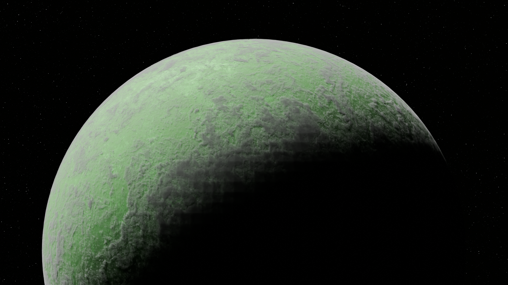
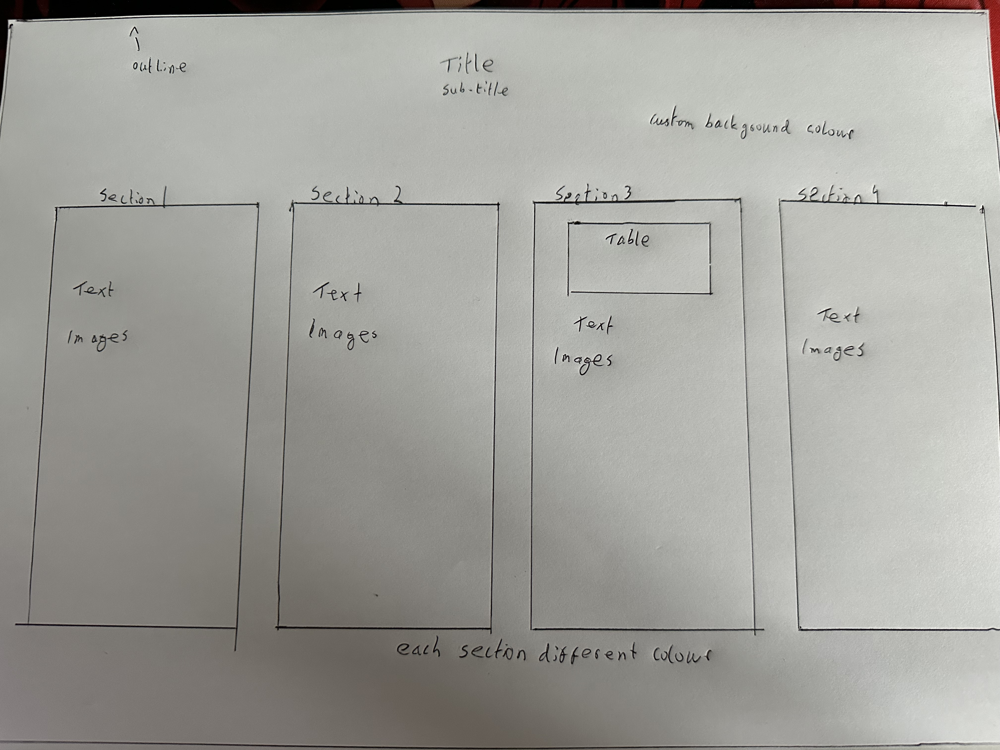

My Portfolio
Welcome to my portfolio website!
About me
Hey, my name is Mateusz Jozwiak. I am a 20 year old University of Limerick student studying Bsc in Music,Media and Performance Technology.

I chose this course as it fit in many of my interests including music, film making, video editing, animation and computers into one single course.

More about me
My favourite project I've been working on is a short animation involving space ships and alien planets.
My hobbies include animating in Blender, video editing and flying planes.
I hope in the future to work as an animator or on film sets to help fund my long term goal of one day becoming a pilot.

Skills and Interests
| Coding | Creative |
|---|---|
| Processing | Sony Vegas Pro |
| HTML | Audacity |
| Arduino | Davinci Resolve |
I have been learning many new programmes that help me work on creative endevours. I recently performed live using a computer software called Ableton.
Reflection & Future Plans
I think this page gives a good quick sneak peak into who I am and how it relates to my course I am doing.

If I gained more web development skills I would like to do animations and drop down menus to fit in more detail and text and to make the website stand out even more. I would like to add a section dedicated purely to showcasing off my previous work.
